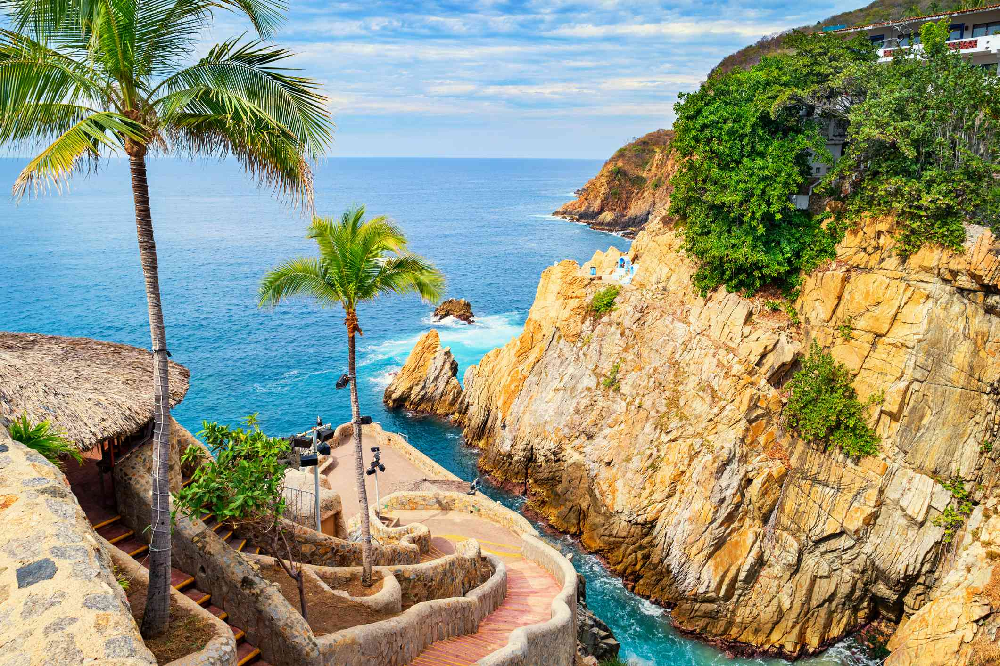
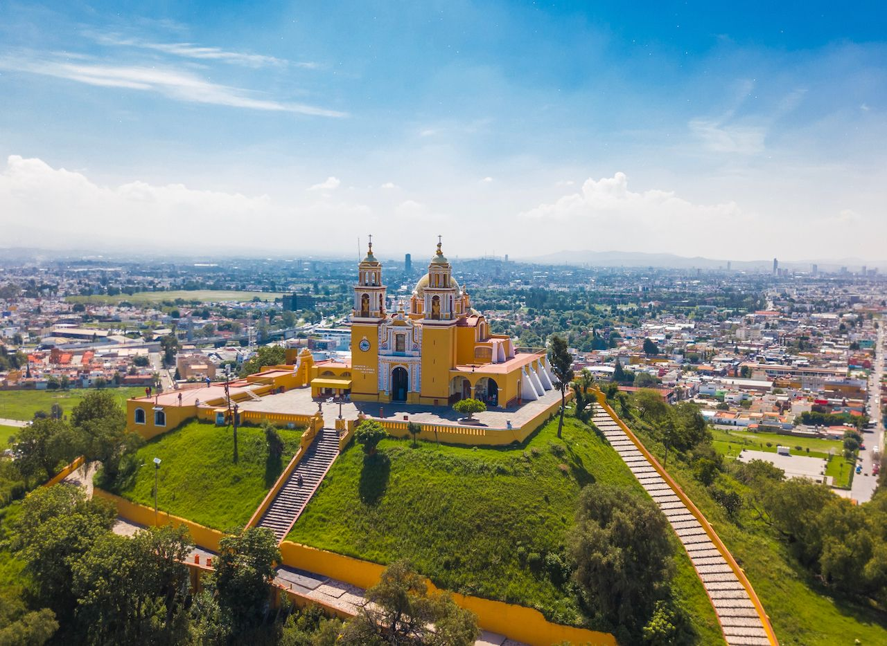
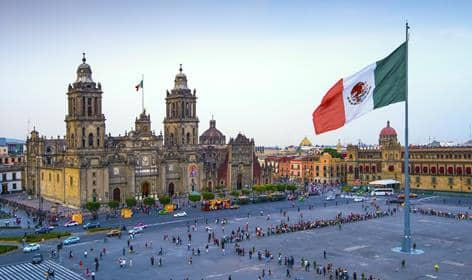

Acapulco mexico
Acapulco: Un destino turístico vibrante y fascinante
Acapulco, México, es un destino turístico vibrante y fascinante que ofrece una combinación perfecta de playas hermosas, cultura rica, gastronomía deliciosa y actividades emocionantes. Ubicado en el estado de Guerrero, Acapulco es uno de los destinos turísticos más importantes de México1. Si estás buscando un lugar para relajarte, disfrutar del sol y la arena, explorar la historia y sumergirte en la vida nocturna, Acapulco es el destino ideal para ti.
Acapulco cuenta con 33 km de playas que se dividen en tres grandes zonas turísticas: Acapulco Tradicional, Acapulco Dorado y Acapulco Diamante.
Acapulco Tradicional: Es la parte antigua del puerto, donde se encuentra el centro de la ciudad, los barrios históricos y el puerto1. Aquí puedes encontrar algunos de los hoteles más antiguos del puerto y restaurantes con platillos típicos1. Camina por el malecón, donde encontrarás una catedral, puestos de periódicos y cafés rodeados de árboles frondosos.
Acapulco Dorado: Es la zona con mayor afluencia turística en el puerto1. Recorre gran parte de la bahía de Acapulco y cuenta con varios hoteles. Encontrarás una gran infraestructura hotelera, centros nocturnos exóticos, restaurantes con vista a la bahía, galerías de arte, joyerías, boutiques, centros comerciales y mercados de artesanías.
Acapulco Diamante: Es la parte más nueva del puerto, con hoteles exclusivos y resorts de cadenas internacionales, complejos residenciales, condominios de lujo y villas privadas.

puebla mexico
Puebla, ubicada en un valle entre cuatro volcanes, es una ciudad colonial mexicana rica en historia, cultura y belleza arquitectónica. Fundada en 1531, Puebla cuenta con más de 2,000 edificios históricos, que le valieron el reconocimiento de la UNESCO como Patrimonio Cultural de la Humanidad en 1987
Qué ver y hacer
Zócalo: El corazón del centro histórico de Puebla, el Zócalo, es una plaza animada donde los lugareños y turistas se reúnen para relajarse y disfrutar del ambiente1. Aquí, puedes encontrar músicos callejeros, vendedores y cafés.
Catedral de Puebla: En el lado sur del Zócalo se encuentra la impresionante Catedral de Puebla, que exhibe una mezcla de estilos barroco, renacentista y neoclásico. Sube a uno de los campanarios para disfrutar de vistas panorámicas de la ciudad y los volcanes.
Capilla del Rosario: Ubicada dentro del Templo de Santo Domingo, la Capilla del Rosario es una joya del arte barroco novohispano, decorada con oro y detalles intrincados.
Museo Amparo: Descubre el arte precolombino y colonial en el Museo Amparo, ubicado en edificios del siglo XVI.
Pueblos Mágicos: Explora los encantos únicos de los nueve Pueblos Mágicos de Puebla, incluyendo Cholula, Atlixco y Zacatlán de las Manzanas.
Gastronomía: Degusta la gastronomía poblana, resultado de la mezcla indígena-hispana, con platos famosos como el mole poblano

Ciudad de Mexico
La Ciudad de México, capital de México, es una de las ciudades más grandes y vibrantes del mundo, con una historia de más de 700 años. Aquí convergen ruinas precolombinas, arquitectura colonial y modernidad, ofreciendo una experiencia inolvidable a sus visitantes
Cultura e Historia
El Centro Histórico de la Ciudad de México, declarado Patrimonio de la Humanidad por la UNESCO, alberga numerosos edificios coloniales y monumentos históricos13. Recorre el Zócalo, la plaza principal, y visita la Catedral Metropolitana y el Palacio Nacional para sumergirte en la historia de México234. Explora el Templo Mayor, vestigio de la antigua capital azteca, Tenochtitlán